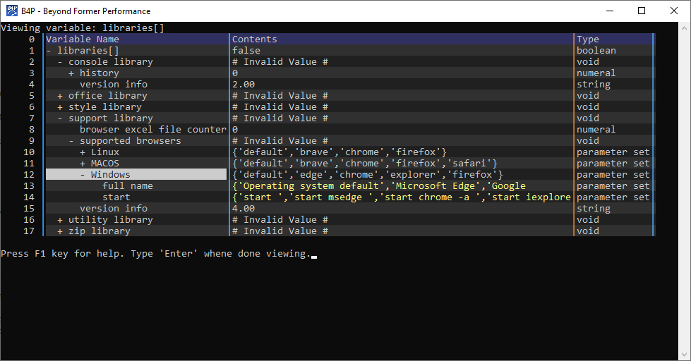

Introduction
The function inspect() allows you to inspect variables including their array and structure members
interactively. Example: inspect(libraries[]) visualizes all contents of the existing system variable libraries[].
Following specific or additional commands apply for Interactive Visualization of variables only:
| Key | Function |
|---|---|
| + | On rows marked '+', Expand the variable by making the next level of underlying member variables visible |
| > | On rows marked '+', Expand the variable by making all underlying member variables visible |
| - | On rows marked '-', Contract the variable by hiding all underlying members |
| F3 | Provide meta-info such as weight, leaf count and tree profile |
| ( F4 ) | Sorting columns using F4 is not supported here |
Example Output

Seeing and listing variables
>> a[] = 3
>> a[kid] = 4
>> a[nic] = 5
>> see(a[])
a[] 3 ("3") (numeral,full access)
kid 4 ("4") (numeral,full access)
nic 5 ("5") (numeral,full access)
>> see(a[kid])
a[kid] 4 ("4") (numeral,full access)
>> =a[]
3 [numeral]
>> list variables( a )
Variable List Level = 0 Regional Level = 0 System variables
_______________________________________________________________________________
Variable List Level = 1 Regional Level = 1 Global variables
_______________________________________________________________________________
a 3 ("3") (numeral,full access)
kid 4 ("4") (numeral,full access)
nic 5 ("5") (numeral,full access)
>>Other ways to view variables
Additional functions are available to list and see variables, but without interactive visualization features:
- list variables to list all existing variables including all members (expect a lot of output)
- list system variables to list all system variables including all members (expect a lot of output, too)
- list global variables to list all global variables including all members (expect a log of output, but less than above)
- list local variables to list all local variables
- see to see the contents of a specific variable including all members of it (amount of output depends on total number of memmbers inside)
You can also execute B4P expressions interactively to view variables, e.g. by typing the following to see contents in variable a[]
= a[]